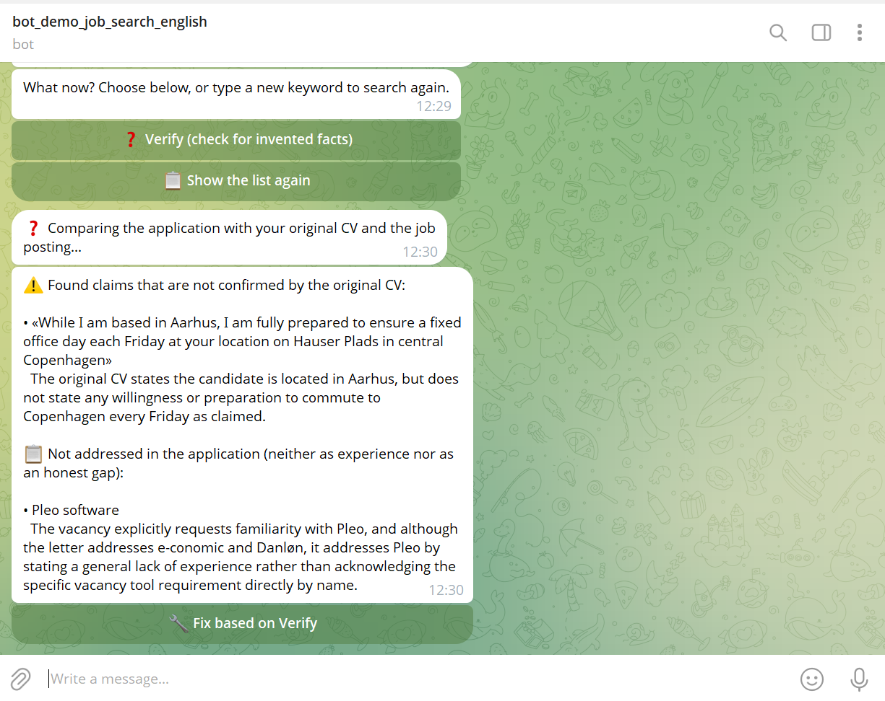
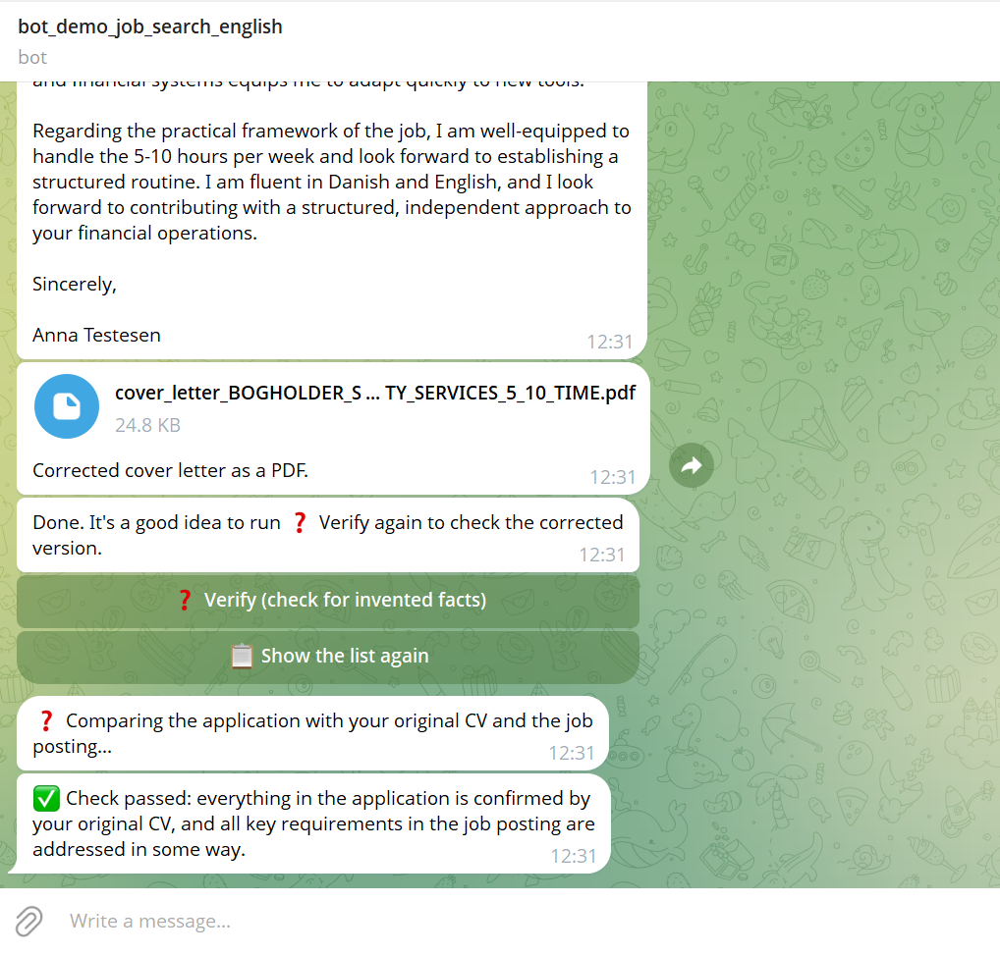

AI that doesn't just write the application — with one click, it also checks it. A real example: an application for a part-time bookkeeper position at CMD Facility Services in Copenhagen — written for a test CV of a bookkeeper based in Aarhus.
1 · FACT CHECK
With the Verify button, a separate AI review compares every single claim in the application with your real CV. Here it caught a claim that is not in the CV: the letter promised a fixed office day every Friday in central Copenhagen, while the CV only says the candidate lives in Aarhus.
2 · COVERAGE CHECK
At the same time, the AI compares the application with the job posting itself and flags every important requirement that is neither mentioned as experience nor honestly acknowledged as a gap. Same real result, same message — the posting asks for familiarity with Pleo, and the letter only mentioned a general lack of experience instead of naming the tool.

3 · FIX BASED ON VERIFY
A single click fixes exactly the points Verify found — nothing else is rewritten. The bot immediately generates an updated application as a PDF. In this case one round was enough. Sometimes it takes two or three rounds — each new check looks at the corrected version from scratch.
You decide. "Fix based on Verify" is a suggestion, not a requirement. A mismatch between the job and your CV is normal — sometimes the right answer is to leave the application as it is, or not to apply at all.
4 · FINAL CHECK
After the fix, Verify runs again — now on the updated version. Only when everything is confirmed by your CV and all requirements in the job posting are addressed do you get a clean "passed".
